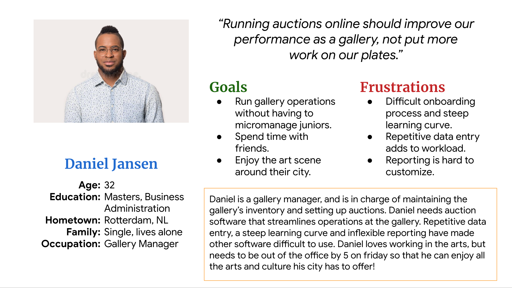
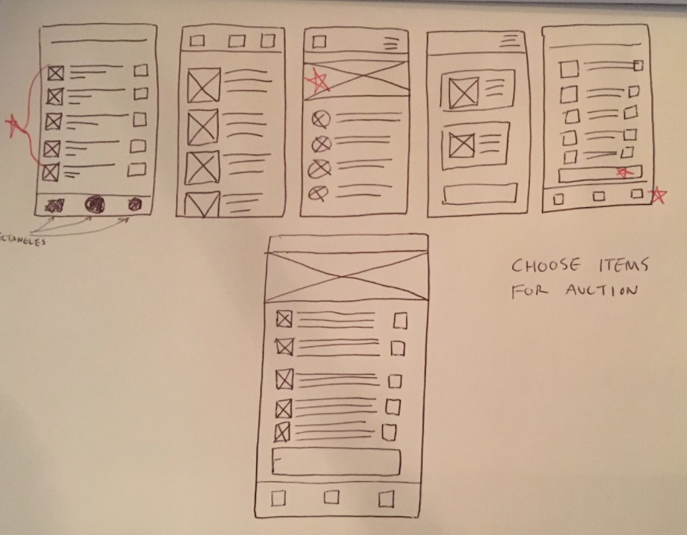
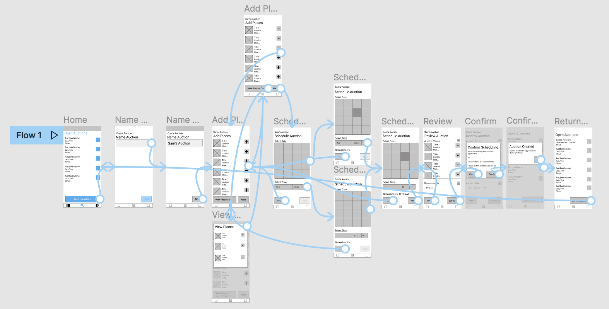

Art Auction App
Roles
Lead UX Designer
, Researcher
Target Audience
An app for busy gallery managers which streamlines the art auction process.
Constraints & Challenges
The main challenge was including a full range of gallery managment functions in a simplified app.
Research Study Details
User research revealed 2 main pain points in running an art auction:
- Complicated:
Most auction software has a steep learning curve, requiring extra training
for
new hires. Having an intuitive design is key to saving users time and energy on onboarding.
- Repetitive:
Having multiple platforms for inventory, auctions and reporting leads to
repetitive data entry at each stage of a pieces’ life in the gallery. Having inventory
management, auction, and reporting features built into the app reduce redundant data entry.
User Persona

Initial Designs

Initial desing concepts

Low-fidelity prototype
user testing results
We performed two rounds of remote, supervised usability testing, which garnered the following findings:
Round 1 findings
- Users wanted the freedom to select a date or time independent of each other in the
scheduling
process.
- Users wanted to see what the “view pieces” and plus buttons did on the add pieces screen.
Round 2 findings
- Users thought that the local navigation buttons at the top of the screens were too large.
High-Fidelity Designs
Our usability studies provided us with the design direction needed to bring the design into a final
high-fidelity design.
Conclusion & Next Steps
1. Build on what went well in this user flow to create user flows for the inventory and reporting flows.
2. Conduct another round of testing to further refine the main user flow.
3. Add user profile and setting functionality.